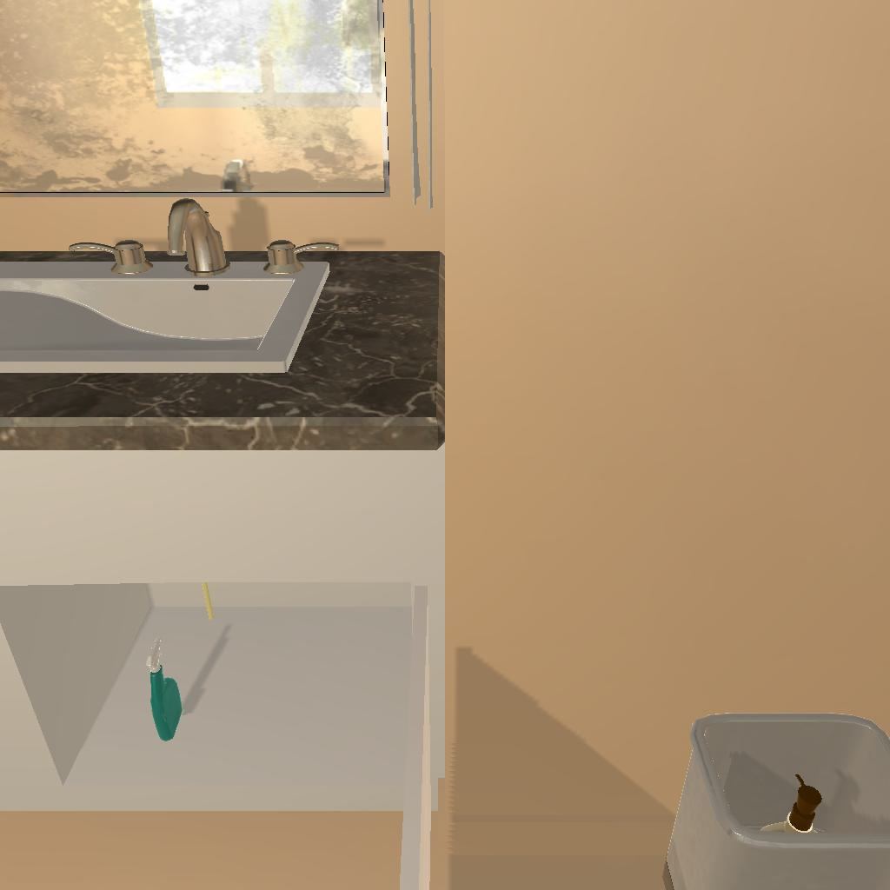

---------------------------------------------------------task: 11---------------------------------------------------------
--------------------------------------------------------------------------------------------------------------------------------------------------------------------
--------------------------------------------------------------------------------------------------------------------------------------------------------------------
Step:--------------------------------------------------------------------------17-------------------------------------------------------------------------------
----------------------------------------
VLM Prompt:
Image1:
**Instruction**
1. Analyze the provided image to identify all visible household objects, focusing on those relevant to the task description "put a clean soapbar in bathtubbasin."
2. Use the analysis of the image and the task hint "The agent must find an object of the desired type, pick it up, go to a sink or a basin, clean the object with a sink or basin, and then find the correct location to place it and put it down there. The agent does not need to use soap bottle or faucet to clean the object, and the agent just needs to do action that is "clean the object with the sink or sink basin"." to answer the question: what is the most reasonable action in the choices for the task description "put a clean soapbar in bathtubbasin"?
4. Decide and write the answer using the template: The answer is: (i): , where i is the real number. If there is no desired object in the image, search every place based on **Initial Observation** to find the object. And if no one is exactly correct, choose a similar answer.
**Initial Observation**
You are in the middle of a room. Looking quickly around you, you can see bathtub (1), bathtubbasin (1), toilet (1), cabinet (1-2), countertop (1), sink (1), sinkbasin (1), garbagecan (1)
**Answer Choices**
(1): go to bathtub 1
(2): go to bathtubbasin 1
(3): go to toilet 1
(4): go to cabinet 1
(5): go to countertop 1
(6): go to sink 1
(7): go to sinkbasin 1
(8): go to garbagecan 1
(9): close cabinet 2
(10): take faucet 2 from cabinet 2
(11): take spraybottle 2 from cabinet 2
(12): take handtowel 1 from cabinet 2
(13): take soapbottle 1 from cabinet 2
(14): take candle 2 from cabinet 2
(15): examine cabinet 2
**Answer**
Let's think step by step by following the instructions.
----------------------------------------
----------------------------------------
Original Response:
- First, we need to locate a soap bar. The image does not show a soap bar, so we will have to search for it based on the initial observation.
- The soap bar could be in the cabinet or on the countertop, as these are common places to store such items.
- Once the soap bar is located, we need to clean it with a sink or sink basin. The image shows a sink and a sinkbasin.
- After cleaning the soap bar, we are instructed to put it in the bathtubbasin.
Based on this analysis, the most reasonable action would be to first look for the soap bar in the cabinet or countertop. However, since the answer choices do not include searching the countertop and the cabinet options (4 and 15) do not specify taking or examining for a soap bar, the next best step is to go to the bathtubbasin where we ultimately need to place the clean soap bar.
The answer is: (2): go to bathtubbasin 1.
----------------------------------------
----------------------------------------
>>> Refine Original VLM Response and Get Pure Action: go to bathtubbasin 1
----------------------------------------
-----------------------------------------------------------------
Running time: 13.14901614189148 seconds
Total Money: 3.3922399999999993
-----------------------------------------------------------------
-----------------------------------------------------------------
Text Observation:You arrive at loc 1. On the bathtubbasin 1, you see a cloth 2, a faucet 3, and a candle 3.
-----------------------------------------------------------------
UNSUCCEED